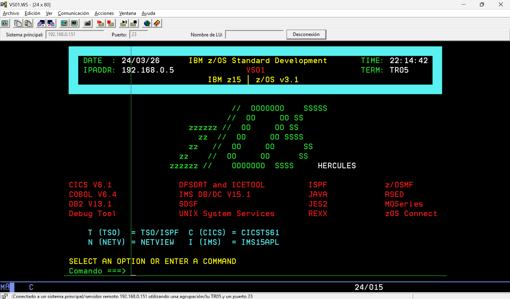
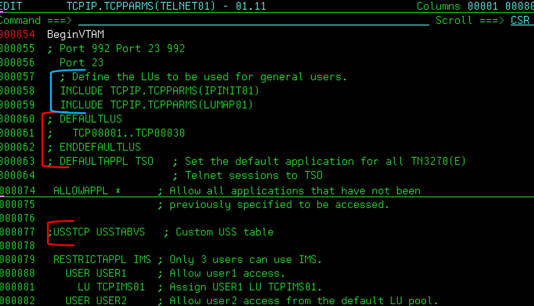
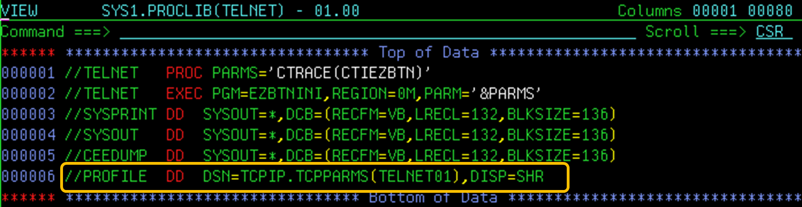
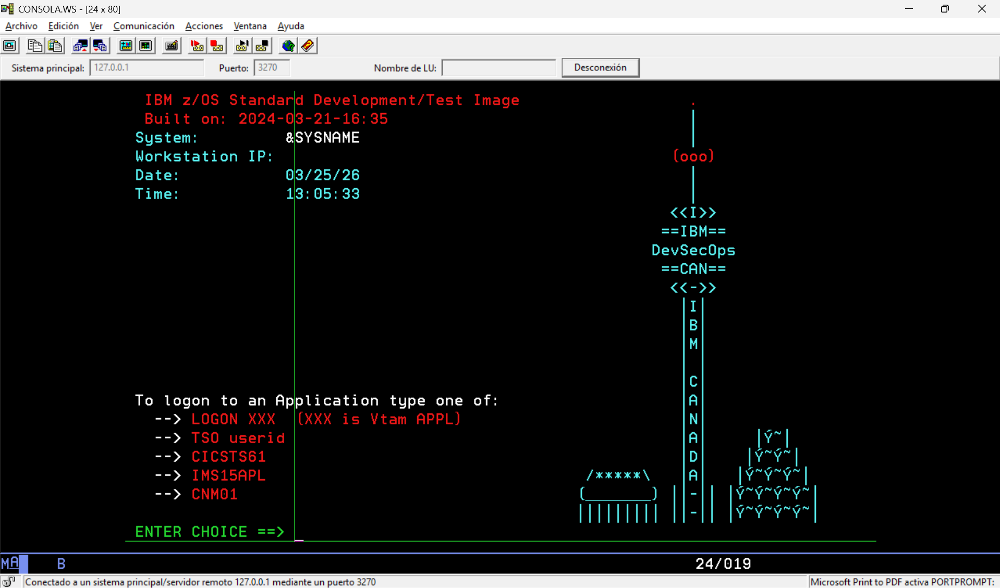

Pantalla de inicio de sesión personalizada en VTAM (IBM z/OS 3.1)
Guía técnica y documentación del proyecto.

🎯 Objetivo
Customizar una pantalla de logon VTAM 3270 personalizada en IBM z/OS, reemplazando el diseño predeterminado por una interfaz visual corporativa.
🧩 Componentes utilizados
- VTAM Application Definitions
- Paneles 3270 personalizados
- TSO/ISPF
- JCL para ensamblaje e implementación
- Hercules Emulator
🛠️ Cambios realizados
Se modificaron las definiciones de VTAM para:
- USSTABA — Macro USSTAB personalizada en ensamblador
- VTAMSEM (JCL) — JCL utilizado para el ensamblaje y link-edit
📥 Recursos descargables
Como complemento a esta guía técnica, se incluyen los siguientes recursos utilizados durante la implementación, disponibles para descarga y revisión:
Los recursos se proveen con fines educativos y de demostración. Los nombres de datasets y parámetros pueden requerir ajuste según el entorno.
Paso 1 — Configuración del entorno (TCPIP y TN3270)
Esta configuración es un prerrequisito para la personalización del logon VTAM, ya que define cómo se asignan las terminales 3270 antes de que VTAM procese el acceso del usuario.
Antes de realizar cualquier personalización a nivel VTAM, fue necesario ajustar el comportamiento de los subsistemas TCPIP y TN3270, específicamente en lo relacionado con la asignación de terminales y el control de accesos por dirección IP.
Estos cambios permiten un control más predecible de las sesiones 3270, asegurando que los usuarios que se conectan vía TELNET/TN3270 reciban terminales definidas de acuerdo con perfiles específicos.
📂 Nuevos miembros en TCPIP.TCPPARMS
Se definieron dos nuevos miembros en la librería
TCPIP.TCPPARMS, los cuales no se encontraban presentes
originalmente en el sistema.
- IPINIT01 — Inicialización y parámetros base para TCP/IP
- LUMAP01 — Mapeo de direcciones IP a unidades lógicas (LUs)
IPINIT01 actúa como punto de entrada para la inicialización
del stack TCP/IP, permitiendo incluir definiciones modulares como el
mapeo de LUs mediante LUMAP01.
*------------------------------------------------------------------
* IPINIT01 — TCP/IP Initialization Member
*------------------------------------------------------------------
USSTCP USSTABVS 192.168.0.3
USSTCP USSTABA 192.168.0.5
LUMAP01 este miembro define la asociación entre rangos de direcciones IP y pools de unidades lógicas, permitiendo controlar qué terminales son asignadas a las conexiones TN3270 entrantes.
*------------------------------------------------------------------
* LUMAP01 — LU Mapping by IP Address
*------------------------------------------------------------------
LUMAP TR01 192.168.0.3 DEFAPPL CICSTS61
LUMAP TR02 192.168.0.3
LUMAP TR03 192.168.0.3
LUMAP TR04 192.168.0.5
LUMAP TR05 192.168.0.5
LUMAP TR06 192.168.0.5
🔗 Perfil TN3270 personalizado (TELNET01)
Este enfoque evita modificar perfiles estándar del sistema y permite aislar el comportamiento de las sesiones personalizadas.
Se creó un nuevo perfil de TN3270 denominado TELNET01,
tomando como base el perfil estándar TN3270.
La nueva definición incluye modificaciones específicas para el control de sesiones, asignación de terminales y la forma en que los usuarios establecen el enlace mediante TELNET.
Se agregaron estos dos parametros: esto incluye todas las definiciones realizadas en los miembros IPINIT01 Y LUMAP01
INCLUDE TCPIP.TCPPARMS(IPINIT01)
INCLUDE TCPIP.TCPPARMS(LUMAP01)
Se comentaron los parametros siguientes:
;DEFAULTLUS
;TCP00001..TCP00030
;ENDDEFAULTLUS
Tambien se comento el USSTAB default
;USSTCP USSTABVS

⚙️ Ajuste del task TELNET
Finalmente, se modificó el nombre de la tarea que expone el servicio TELNET a los usuarios, vinculándola explícitamente al nuevo perfil TELNET01.
Este ajuste asegura que todas las conexiones entrantes utilicen la nueva configuración sin afectar otras definiciones existentes.

🛠️ Creación y activación de terminales VTAM
Una vez aplicada la personalización de TCP/IP y del perfil TN3270, es necesario definir explícitamente las terminales VTAM que serán asignadas a las conexiones remotas según la dirección IP.
Estas terminales corresponden directamente a las entradas definidas
previamente en el miembro LUMAP01.
📂 Miembro VSREMOT en SYS1.VTAMLST
Se creó un nuevo miembro en la biblioteca SYS1.VTAMLST
denominado VSREMOT, el cual define las terminales
VTAM utilizadas para las conexiones remotas.
EDIT SYS1.VTAMLST(VSREMOT) - 01.04 Columns 00001 00080
Command ===> Scroll ===> CSR
****** ********************************* Top of Data **********************************
000001 VSREMOT VBUILD TYPE=APPL
000002 TR01 APPL AUTH=(ACQ)
000003 TR02 APPL AUTH=(ACQ)
000004 TR03 APPL AUTH=(ACQ)
000005 TR04 APPL AUTH=(ACQ)
000006 TR05 APPL AUTH=(ACQ)
000007 TR06 APPL AUTH=(ACQ)
****** ******************************** Bottom of Data ********************************
Cada entrada TR0x corresponde a una terminal VTAM definida
explícitamente y asociada a una dirección IP mediante el mapeo
configurado en LUMAP01.
▶️ Activación del recurso VTAM
Una vez definido el miembro, las terminales se activaron dinámicamente utilizando el siguiente comando VTAM:
V NET,ACT,ID=VSREMOT,SCOPE=ALL
Esto permite que las terminales queden disponibles sin necesidad de reiniciar VTAM o dar IPL.
🌐 Ajuste del puerto TELNET en TCPIP PROFILE
Se validó y ajustó el perfil TCP/IP que utiliza la tarea TELNET,
asegurando que el puerto 23 estuviera asociado al nuevo servicio
TELNET y no al task original TN3270.
En mi caso se modifico el profile de la bilioteca K2.TCPPARMS(PROFILE)
ya que es el que esta configurado predeterminadamente.
VIEW K2.TCPPARMS(PROFILE) - 01.06 Columns 00001 00080
Command ===> Scroll ===> CSR
000031 ; commented out so any proc name can bind
000032 ; 111 TCP PMAPOE ; Portmap Server
000033 ; 111 UDP PMAPOE ; Portmap Server
000034 ; 2049 UDP MVSNFS ; NFS Server
000035
000036 PORT
000037 20 TCP OMVS NOAUTOLOG ; FTP Server
000038 21 TCP OMVS ; FTP Server
000039 22 TCP OMVS ; Secure Shell (SSH)
000040 ; 23 TCP TN3270 ; TELNET Server
000041 23 TCP TELNET ; TELNET Server
000042 25 TCP SMTP ; SMTP Server
000043 53 TCP NAMESRV ; Domain Name Server
En este escenario, la tarea TN3270 fue desactivada y se
levantó la tarea TELNET utilizando el perfil personalizado,
garantizando que las nuevas configuraciones de IP, terminales y VTAM
fueran aplicadas correctamente.
📟 Inicialización automática de terminales con NetView
Por último, se agrego al miembro ATCCON00 en SYS1.VTAMLST la definición de terminales que utilizaremos del miembro VSREMOT para que NetView levante las conexiones remotas y se encuentren disponibles automáticamente tras un IPL del sistema.
NetView utiliza el miembro CNMSJI03 para determinar
qué definiciones VTAM deben activarse durante la inicialización.
VIEW NETVIEW.V6R4M0.ACNMSAMP(CNMSJI03) - 01.00 Columns 00001 00080
Command ===> Scroll ===> CSR
000015 SELECT MEMBER=((CNMS0006,ATCCON00,R))
Esto indica que NetView levanta las conexiones VTAM definidas
en el miembro ATCCON00.
⌨️ Inclusión de VSREMOT en SYS1.VTAMLST(ATCCON00)
El miembro ATCCON00 fue actualizado para incluir
la definición VSREMOT, garantizando que las
terminales remotas se activen automáticamente.
VIEW SYS1.VTAMLST(ATCCON00) - 01.02 Columns 00001 00080
Command ===> Scroll ===> CSR
****** ********************************* Top of Data **********************************
000001 OSATRLE,A0600,TCPAPPL,IVPLU,SMCSAPPL,A01APPLS,EXLOCAL,VSREMOT
000002 OSATRLE,A0600,EXLOCAL,TCPAPPL,IVPLU,SMCSAPPL,SMCSCONS,VSREMOT, X
000003 CICSANSB,DBD1APPL,IVPAPLI,IVPLCLI,IVPLCLT
****** ******************************** Bottom of Data ********************************
✅ Estado del entorno
Con esta configuración aplicada, el entorno queda completamente preparado para la personalización del logon VTAM, ya que:
- Las conexiones TN3270 utilizan perfiles personalizados
- Las terminales VTAM están definidas y activas
- La inicialización es automática vía NetView
Paso 2 — Desarrollo y ensamblaje del USSTAB
Con el entorno de comunicaciones y las terminales VTAM correctamente definidas y activas, se procede a la personalización del logon VTAM mediante la modificación de la macro USSTAB.
Esta personalización permite definir el flujo visual y funcional que experimentan los usuarios al establecer una sesión 3270 en el sistema.
📘 ¿Qué es USSTAB?
USSTAB es una tabla VTAM que controla el comportamiento del proceso de inicio de sesión, incluyendo menús, mensajes y el enrutamiento inicial del usuario hacia subsistemas como TSO o CICS.
La personalización de USSTAB permite reemplazar el flujo estándar por una experiencia controlada y alineada a las necesidades del entorno.
🔍 Estado inicial del USSTAB
Antes de aplicar cualquier cambio, el sistema utilizaba la definición estándar de USSTAB provista por la instalación base de z/OS.

🧩 Modificación de la macro USSTAB (Assembler)
Se realizaron modificaciones directas a la macro USSTAB para definir el nuevo flujo de logon, incorporando opciones personalizadas y mejorando la presentación visual.
EDIT SYS1.VTAMLST(USSTABA) - 01.08 Columns 00001 00080
Command ===> Scroll ===> CSR
****** ********************************* Top of Data **********************************
000001 * * * * * * * * * * * * * * * * * * * * * * * * * * * * * * * * * * * *
000002 * DATE : 22/03/2026 *
000003 * APLICACION : LOGON *
000004 * MODULO : USSTABA *
000005 * TYPE PGM : MACROS ASSEMBLER *
000006 * DESCRIPTION : APLICATION LOGON SCREEN FOR VTAM *
000007 * DEVELOPER : HAESSLER MALDONADO *
000008 * * * * * * * * * * * * * * * * * * * * * * * * * * * * * * * * * * * *
000009 MACRO
000010 &NAME SCREEN &MSG=ª,&TEXT=ª
000011 AIF ('&MSG' EQ 'ª' OR '&TEXT' EQ 'ª').END
000012 LCLC &BFNAME,&BFSTART,&BFEND
000013 *>>
000014 *>> * * * * * * * * * * * * * * * * * * * * * * * * * * * * * * * * * *
000015 *>> VARIABLES DE COLORES
000016 *>> * * * * * * * * * * * * * * * * * * * * * * * * * * * * * * * * * *
000017 *>>
000018 &BLUE SETC 'X''2902C0F842F1''' SFE HI,SKIP,BLUE
000019 &RED SETC 'X''2902C0F842F2''' SFE HI,SKIP,RED
000020 &PINK SETC 'X''2902C0F842F3''' SFE HI,SKIP,PINK
000021 &GREEN SETC 'X''2902C0F842F4''' SFE HI,SKIP,GREEN
000022 &TURQ SETC 'X''2902C0F842F5''' SFE HI,SKIP,TURQ
000023 &YELLOW SETC 'X''2902C0F842F6''' SFE HI,SKIP,YELLOW
000024 &WHITE SETC 'X''2902C0F842F7''' SFE HI,SKIP,WHITE
000025 *>>
000026 *>> * * * * * * * * * * * * * * * * * * * * * * * * * * * * * * * * * *
000027 *>> COLORES DE FONDO
000028 *>> * * * * * * * * * * * * * * * * * * * * * * * * * * * * * * * * * *
000029 *>>
000030 &BBLUE SETC 'X''290341F2C0F842F1''' BLUE BACKFROUND
000031 &BRED SETC 'X''290341F2C0F842F2''' RED BACKFROUND
000032 &BPINK SETC 'X''290341F2C0F842F3''' PINK BACKFROUND
000033 &BGREEN SETC 'X''290341F2C0F842F4''' GREEN BACKFROUND
000034 &BTURQ SETC 'X''290341F2C0F842F5''' TURQ BACKFROUND
000035 &BYELLOW SETC 'X''290341F2C0F842F6''' YELLOW BACKFROUND
000036 &BWHITE SETC 'X''290341F2C0F842F7''' WHITE BACKFROUND
000037 *>>
000038 *>> * * * * * * * * * * * * * * * * * * * * * * * * * * * * * * * * * *
000039 *>> COLORES CON BLINK
000040 *>> * * * * * * * * * * * * * * * * * * * * * * * * * * * * * * * * * *
000041 *>>
000042 &HBLUE SETC 'X''290341F1C0F042F1''' BLUE BLINK
000043 &HRED SETC 'X''290341F1C0F042F2''' RED BLINK
000044 &HPINK SETC 'X''290341F1C0F042F3''' PINK BLINK
000045 &HGREEN SETC 'X''290341F1C0F042F4''' GREEN BLINK
000046 &HTURQ SETC 'X''290341F1C0F042F5''' TURQ BLINK
000047 &HYELLOW SETC 'X''290341F1C0F042F6''' YELLOW BLINK
000048 &HWHITE SETC 'X''290341F1C0F042F7''' WHITE BLINK
000049 *>>
000050 *>> * * * * * * * * * * * * * * * * * * * * * * * * * * * * * * * * * *
000051 *>> BIGIN PROGRAM
000052 *>> * * * * * * * * * * * * * * * * * * * * * * * * * * * * * * * * * *
000053 *>>
000054 &BFNAME SETC 'BUF'.'&MSG'
000055 &BFBEGIN SETC '&BFNAME'.'B'
000056 &BFEND SETC '&BFNAME'.'E'
000057 .BEGIN DS 0F
000058 &BFNAME DC AL2(&BFEND-&BFBEGIN)
000059 &BFBEGIN DC X'F5' ERASE WRITE COMMAND
000060 DC X'C7' WCC ALARM (7A)
000061 DC X'11' SET BUFFER ADDRESS ORDER
000062 DC X'40C0' LINE 1 COLUMN 2
000063 DC &BTURQ COLOR TURQUISE
000064 DC C' '
000065 DC C' '
000066 DC &WHITE COLOR BLANCO
000067 DC &BTURQ FONDO TURQUESA
000068 DC C' '
000069 DC &GREEN COLOR VERDE
000070 DC C'DATE :'
000071 DC X'1DF8'
000072 DC C'@@@@DATE'
000073 DC X'11' SET BUFFER ADDRESS ORDER
000074 DC X'C1E9' LINE 2 COLUMN 26
000075 DC &YELLOW COLOR AMARILLO
000076 DC C'IBM z/OS Standard Development'
000077 DC X'11' SET BUFFER ADDRESS ORDER
000078 DC X'C24D' LINE 2 COLUMN 61
000079 DC &GREEN COLOR VERDE
000080 DC C'TIME:'
000081 DC X'11' SET BUFFER ADDRESS ORDER
La estructura base de la macro se mantiene, agregando únicamente los elementos requeridos para la personalización del logon.
🔗 Referencia del nuevo USSTAB en TCP/IP
Una vez ensamblado el nuevo módulo USSTAB, es necesario
registrar explícitamente el nombre de la tabla en el miembro
IPINIT01, previamente creado durante la configuración de
TCP/IP.
Este paso es fundamental, ya que permite a TCP/IP asociar las conexiones entrantes con la nueva tabla de logon personalizada.
*------------------------------------------------------------------
* IPINIT01 — Referencia a tablas USSTAB
*------------------------------------------------------------------
USSTCP USSTABVS 192.168.0.3
USSTCP USSTABA 192.168.0.5
En este escenario, el nombre USSTABA corresponde al
nuevo USSTAB ensamblado y es utilizado para las conexiones provenientes
de la dirección IP 192.168.0.5.
⚙️ JCL para ensamblaje del USSTAB
Para compilar e integrar la macro USSTAB al sistema, se utilizó el siguiente JCL de ensamblaje:
VIEW SYS1.VTAMLST(VTASEM) - 01.08 Columns 00001 00080
Command ===> Scroll ===> CSR
****** ********************************* Top of Data **********************************
000001 //VTAMSEM JOB Z,'HAESSLER MALDONADO',CLASS=A,MSGCLASS=X,NOTIFY=&SYSUID
000002 //*********************************************************************
000003 //* COMPILA USSTAB
000004 //*********************************************************************
000005 //ASM EXEC PGM=ASMA90,REGION=4M,PARM='NODECK,OBJECT'
000006 //SYSPRINT DD SYSOUT=*
000007 //SYSLIB DD DSNAME=SYS1.MACLIB,DISP=SHR
000008 // DD DSNAME=SYS1.SISTMAC1,DISP=SHR
000009 //* DD DSNAME=NETVIEW.V6R4M0.SCNMMAC1,DISP=SHR
000010 //SYSUT1 DD UNIT=SYSDA,SPACE=(CYL,(1,1))
000011 //SYSUT2 DD UNIT=SYSDA,SPACE=(CYL,(1,1))
000012 //SYSUT3 DD UNIT=SYSDA,SPACE=(CYL,(1,1))
000013 //SYSLIN DD DSNAME=&&SYSGO,DISP=(,PASS),UNIT=SYSDA,
000014 // SPACE=(CYL,(1,1))
000015 //SYSIN DD DSN=SYS1.VTAMLST(USSTABA),DISP=SHR
000016 //LINK EXEC PGM=HEWL,REGION=4M,COND=(4,LT),
000017 // PARM='LIST,MAP,XREF,RENT'
000018 //SYSPRINT DD SYSOUT=*
000019 //SYSUT1 DD SPACE=(CYL,(1,1)),DISP=(NEW,PASS),UNIT=SYSDA
000020 //SYSLMOD DD DSN=SYS1.LINKLIB(USSTABA),DISP=SHR
000021 //SYSLIN DD DSNAME=&&SYSGO,DISP=(OLD,DELETE)
****** ******************************** Bottom of Data ********************************
El ensamblaje se realizó sin errores y el resultado fue incorporado correctamente al entorno VTAM.
Paso 3 — Despliegue y activación del USSTAB
El módulo resultante del ensamblaje fue almacenado en la biblioteca
SYS1.LINKLIB, permitiendo su disponibilidad a nivel sistema
sin requerir pasos adicionales de concatenación.
🔄 Refresco de bibliotecas del sistema
Para asegurar que el sistema reconozca inmediatamente el nuevo módulo USSTAB, se realizó un refresco de la caché de bibliotecas utilizando el siguiente comando:
F LLA,REFRESH
Este comando permite que SYS1.LINKLIB sea recargada sin
necesidad de reiniciar el sistema.
▶️ Carga de la nueva tabla USSTAB
Finalmente, se ejecutó un OBEY del perfil TELNET para que TCP/IP cargara la nueva tabla USSTAB asociada al perfil TELNET01.
V TCPIP,TELNET,O,TCPIP.TCPPARMS(TELNET01)
Con este comando, la tarea TELNET queda activa utilizando la nueva configuración de USSTAB sin interrumpir el servicio.
A continuación se muestra el resultado final una vez completado todo el flujo de compilación, despliegue y refresco del entorno.
✅ Resultado final del USSTAB
Tras compilar e integrar el USSTAB personalizado, el sistema presenta una pantalla de inicio alineada con el diseño corporativo definido.